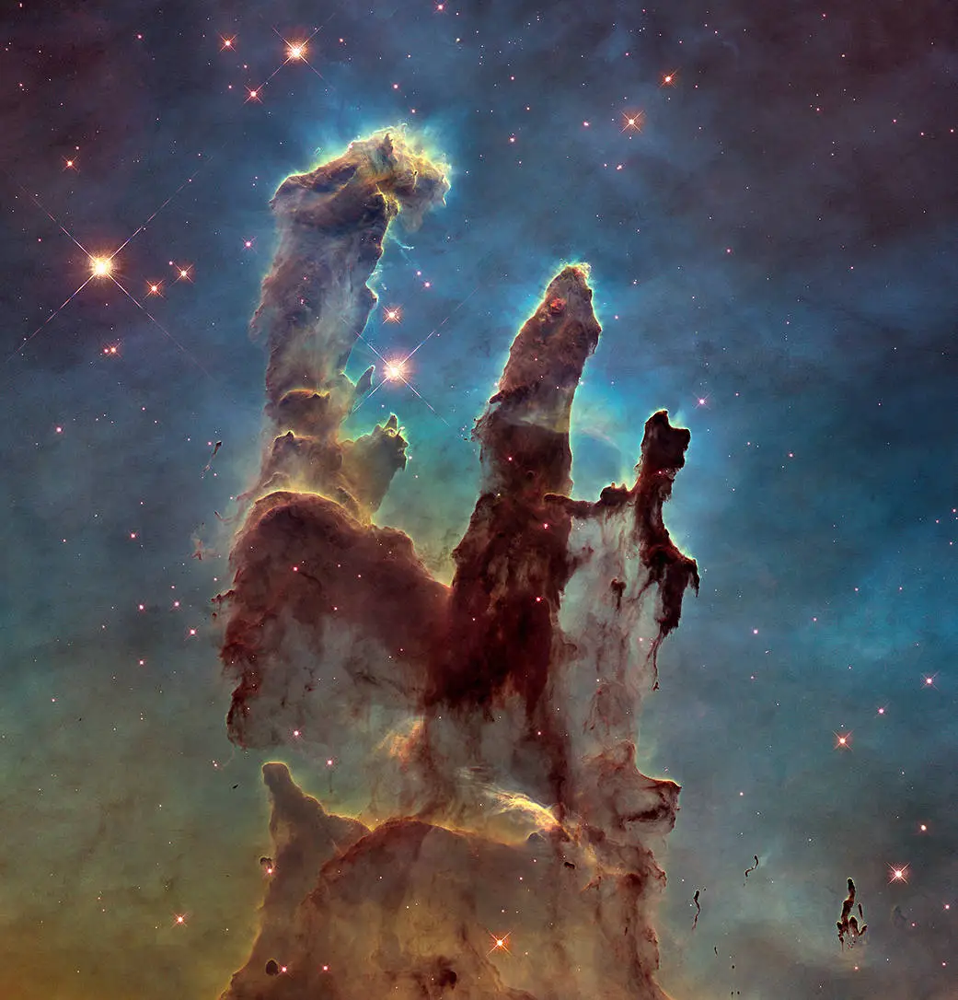

The Milky Way & Beyond
Discover breathtaking views from the Hubble and James Webb telescopes

Milky Way Galaxy
The Milky Way
The Milky Way is the galaxy that we call home. It’s a barred spiral galaxy, meaning it has a central bar-shaped core made of stars, with spiral arms winding outward. It contains over 200 billion stars, countless planets, nebulae, star clusters, and mysterious dark matter all held together by gravity.
- The Milky Way stretches about 100,000 light-years across, and our solar system is located roughly 27,000 light-years from the galactic center, tucked into a minor arm called the Orion Arm.
On a clear, dark night, the cloudy band you see in the sky is part of the Milky Way it's actually millions of stars packed so tightly they appear as a milky glow.

Pillars of Creation – James Webb
James Webb's View
The James Webb Telescope revealed this stunning star-forming region with way more detail than ever seen before.
- Captured in incredible detail by the James Webb Space Telescope, this image shows a portion of the Carina Nebula known as the “Cosmic Cliffs.” The towering, mountain-like structures are actually massive clouds of interstellar gas being carved by the intense radiation and stellar winds from young, hot stars nearby.
What makes this image so amazing is that it reveals areas of the nebula that were previously hidden by dust. Webb’s infrared capabilities let scientists peek behind the curtain and witness the earliest stages of star birth.

Hubble Deep Field
Hubble's Deep Field
This famous image, taken by the Hubble Space Telescope, shows towering clouds of gas and dust in the Eagle Nebula where new stars are born.
- Hubble was the first major telescope to be placed in space and has been observing the universe for over 30 years. It's helped scientists determine the age of the universe, discover new galaxies, observe black holes, and even capture light from some of the most distant objects ever detected.